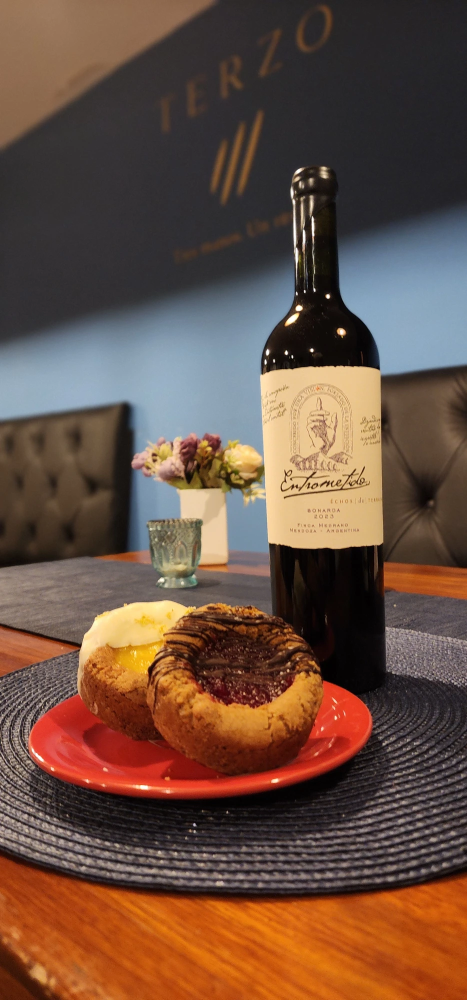

QUE SE LEA.
Títulos claros, fecha y propuesta destacadas, información práctica en un segundo nivel. Piezas pensadas para pantallas pequeñas.
CASO 07 / GASTRONOMÍA · CAMPAÑAS · EXPERIENCIAS
SOMOS CANTINEROS · BAR DE EVENTOS
Una marca.
Muchas experiencias.
Dirección y comunicación visual de propuestas gastronómicas: del producto cotidiano a los encuentros que convocan al público a vivir algo diferente.
EXPLORAR PROYECTO
00 / EL ENFOQUE
La comunicación de Terzo se organiza alrededor de aquello que sucede en el lugar: vinos, gastronomía, conversaciones y formatos participativos. Cada propuesta necesita su mensaje propio, sin perder el tono cálido y reconocible de la marca.
Títulos claros, fecha y propuesta destacadas, información práctica en un segundo nivel. Piezas pensadas para pantallas pequeñas.
Fotografía gastronómica, luz tenue, materiales cálidos y acentos de color al servicio de cada experiencia.
La pieza debe dejar en claro el motivo para asistir y facilitar el paso a la consulta o reserva.
01 / CAMPAÑAS Y FORMATOS
Selección editorial de líneas de comunicación trabajadas para Terzo durante 2026. Los eventos se presentan como antecedentes de campañas, no como promociones abiertas actualmente.
Comunicación de una experiencia en colaboración con Quesito Comué, combinando degustación, taller y una invitación visual centrada en el producto.
Piezas de campaña para destacar sabores, vinos y una propuesta gastronómica temática dentro del lenguaje de la marca.
Convocatorias como copeo y noches especiales: una estructura de comunicación flexible para temáticas, invitados y actividades diferentes.
02 / DISEÑO EN CONTEXTO
La función de una pieza es conectar el atractivo de una experiencia con información concreta. El trabajo creativo abarca concepto, edición del mensaje, organización visual y adaptación a formatos de difusión.
“La comunicación no termina en la imagen: tiene que hacer que alguien quiera estar ahí.”
ENFOQUE DE COMUNICACIÓN / TERZO 2026
07 / 17 · PORTFOLIO PERSONAL
Un caso de comunicación aplicada a marcas gastronómicas, con foco en piezas que traducen propuestas y encuentros a contenidos claros, atractivos y reconocibles.